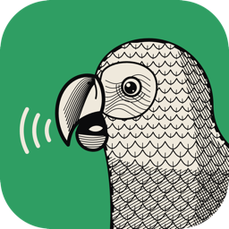

TalkCraft
Das Podcast-Studio für den Desktop: jede Stimme auf eigener Spur, Ferngäste im Browser, Schnitt, Untertitel und Veröffentlichen an einem Ort. A podcast studio for the desktop: every voice on its own track, remote guests in the browser, editing, subtitles and publishing in one place.
Version {{VERSION}} (Beta) · kostenlos · quelloffen (MIT/Apache-2.0) · alle Dateien Version {{VERSION}} (beta) · free · open source (MIT/Apache-2.0) · all files

Vom Mikrofon bis zum FeedFrom microphone to feed

Aufnehmen. Der Ablaufplan hält die Themen in der Zeit, Jingle-Pads spielen live, ein Handy wird zur Fernbedienung.
Record. The run sheet keeps topics on time, jingle pads play live, a phone becomes the remote.

Schneiden. Versprecher, die beim Aufnehmen markiert wurden, verschwinden aus allen Spuren auf einmal; „Folge fertigstellen“ erledigt den Rest.
Edit. Slips marked while recording are cut from every track at once; Finish Episode does the rest.

Veröffentlichen. Die Checkliste sagt, was fehlt; dann geht die Folge mit einem Klick in den eigenen Feed oder zum Hoster.
Publish. The checklist says what is missing; then one click sends the episode to your own feed or your host.
Was TalkCraft kannWhat TalkCraft does
Jede Stimme eine Spur
A track per voice
Vorlage mit Sprachkette pro Sprecher, Mikrofon-Erkennung und Soundcheck fürs Audio-Interface.
A template with a voice chain per speaker, microphone detection and a soundcheck for your interface.
Ferngäste ohne Installation
Remote guests, nothing to install
Gäste kommen per Link im Browser dazu und nehmen verlustfrei bei sich auf; die Datei landet synchron auf ihrer Spur.
Guests join from a browser link and record lossless on their side; the file lands in sync on their track.
Sprache aufbereiten
Clean up speech
Rauschen, Übersprechen, Atmer und Schmatzer reduzieren, Sprecher angleichen, Pausen kürzen, Füllwörter schneiden.
Reduce noise, crosstalk, breaths and mouth clicks, match speakers, shorten pauses, cut filler words.
Transkript und Untertitel
Transcript and subtitles
Transkription auf dem eigenen Rechner (Whisper), Schnitt am Text, SRT/WebVTT, Shownotes mit Kapiteln.
Transcription on your own computer (Whisper), editing by text, SRT/WebVTT, show notes with chapters.
Fertig für jede Plattform
Ready for every platform
M4A, MP3 oder M4B mit Kapiteln und Cover, auf −16 LUFS; Audiogramm-Videos für Social Media.
M4A, MP3 or M4B with chapters and cover at −16 LUFS; audiogram videos for social media.
Live-Produktion
Live production
On-Air-Anzeige, Jingle-Pads auf einem zweiten Bildschirm oder Touchscreen, Fernbedienung per Handy.
On Air display, jingle pads on a second screen or touchscreen, a phone as remote control.
Downloads {{VERSION}}
Windows
Windows 10 und 11, 64 Bit
Windows 10 and 11, 64-bit
- {{FILE_MSI}}
- {{FILE_ZIP}} (ohne Installation)(portable)
Die Installer sind noch nicht signiert. macOS fragt beim ersten Start einmal nach (Rechtsklick › Öffnen), Windows zeigt eine SmartScreen-Warnung („Weitere Informationen › Trotzdem ausführen“).
The installers are not signed yet. macOS asks once on first launch (right-click › Open), Windows shows a SmartScreen warning ("More info › Run anyway").
Download prüfenCheck a download
Prüfsummen aller Dateien stehen in SHA256SUMS.txt. Im Download-Ordner:
The checksums of all files are in SHA256SUMS.txt. In the download folder:
shasum -a 256 -c SHA256SUMS.txt --ignore-missing
Dass eine Datei wirklich aus dem TalkCraft-Repository gebaut wurde, bestätigt GitHub (mit der GitHub CLI):
GitHub confirms that a file was built from the TalkCraft repository (with the GitHub CLI):
gh attestation verify {{FILE_DMG}} -R Gerber-Media/TalkCraft
Quellcode, Änderungen und frühere Versionen:Source code, changes and earlier versions: github.com/Gerber-Media/TalkCraft